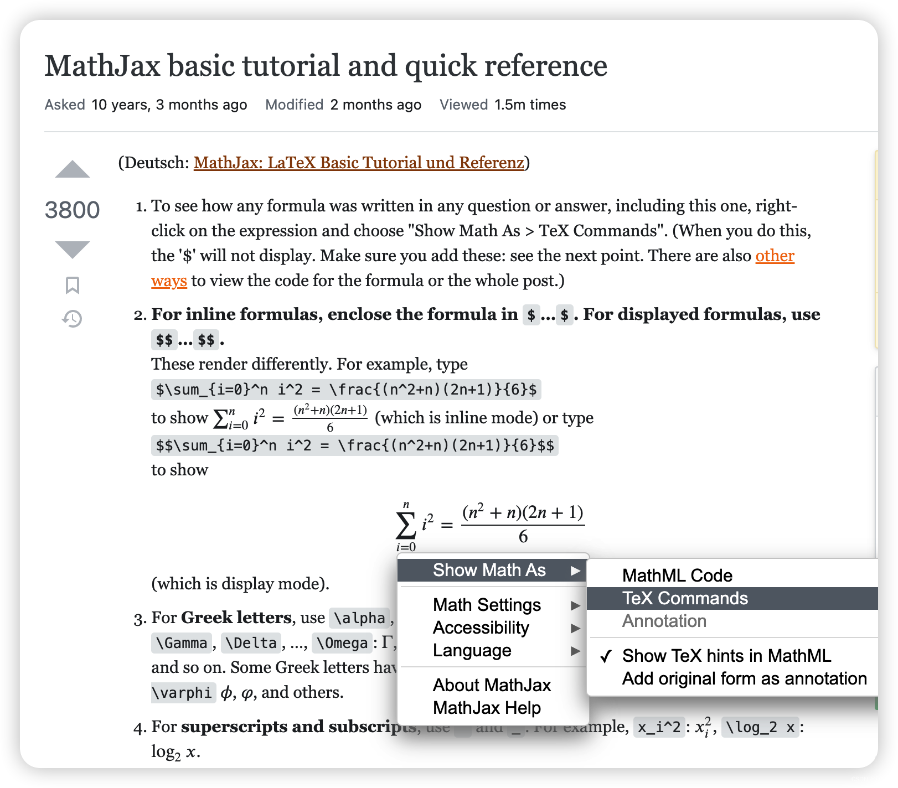
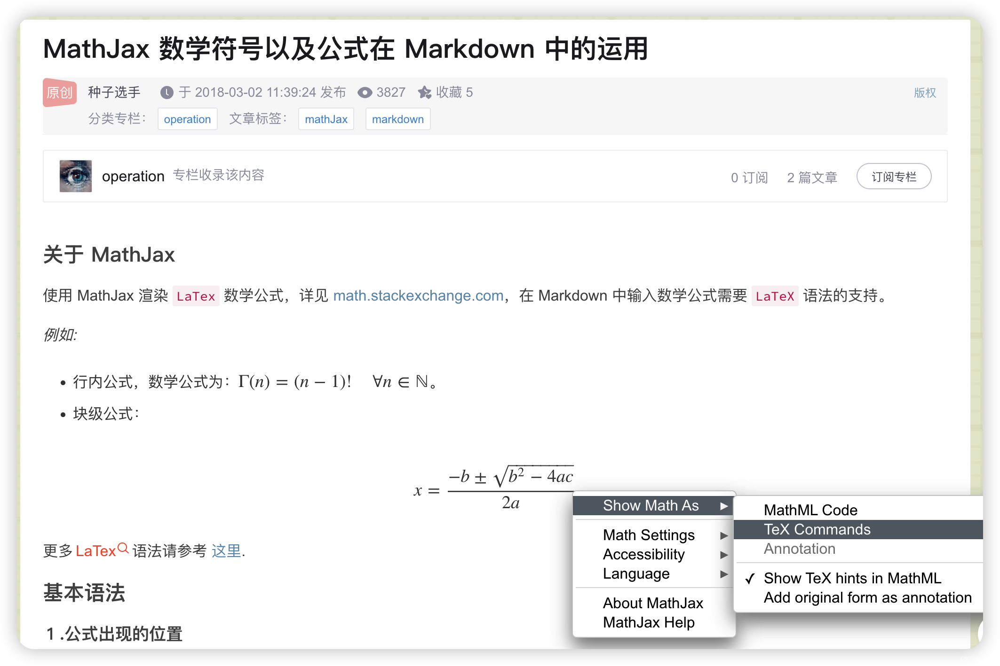
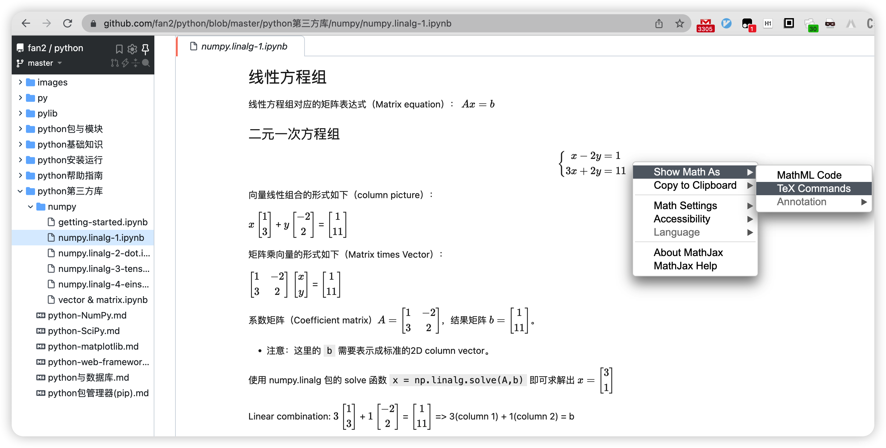

Markdown Formula
本文梳理了 Markdown 插入数学公式。
标识#
- Inline math:
$...$, will be rendered inline. - Display (block) math:
$$...$$, will be rendered in block.
在MathJax中，默认的displayed公式分隔符有 $$...$$ 和 \[...\] ，而默认的inline公式分隔符为 \(...\)，当然这些都是可以自定义的，具体配置请参考文档。在本文中，使用 $$...$$ 作为displayed分隔符，$...$ 作为inline分隔符。
需要注意的是，CSDN markdown、vscode markdown内置预览插件等编辑器中，行内数学公式的美元符号前后均不能有空格，否则无法正常渲染。
在 vscode markdown preview enhanced 插件和 jupyter notebook markdwn cell 中，行内数学公式的美元符号前后有空格也能正常渲染。
-
Inline math equations are wrapped in single dollar signs.
- For example,
$x^2$becomes \(x^2\). - Pythagorean Theorem:
$a^2 + b^2 = c^2$: \(a^2 + b^2 = c^2\). - Einstein’s Theory of Special Relativity:
e=mc^2: \(e=mc^2\).
- For example,
-
KaTeX blocks begin and end with two dollar signs:
% comment为注释行，不会被渲染展示。- 行末插入
\\或\cr换行。
Environments#
环境变量的起始标记为 \begin{ENV} ，结束标记为 \end{ENV}。
常用的环境变量包括以下：
公式/等式#
- 单行等式：
equation，不支持\\换行。需内嵌split分行，相当于$$ ... $$加\\换行，但 equation 指定的公式组会添加（一个）自动编号。 -
对齐等式：
align（aligned,alignat,alignedat），默认右对齐，可使用&指定对齐点（位置）；gather（gathered），默认居中对齐，不支持指定对齐点。- align、gather 会自动给每一行编号，end 后可追加
\tag{N}，忽略自动行编号，指定公式组编号。
- align、gather 会自动给每一行编号，end 后可追加
-
条件等式：
cases（rcases），不会自动添加编号，支持使用&指定对齐点。
数组/矩阵#
- 数组/行：
array，begin前面可添加\def\arraystretch{LINE-SPACE}前缀指定行间距。 - 矩阵：
matrix，支持pmatrix、bmatrix、Bmatrix、vmatrix、Vmatrix等扩展标记。
格式控制#
align、alignat、gather只能用于 Display 块模式（$$...$$），Inline 行内模式（$...$）得使用aligned、alignedat、gathered。- To input a numerical LPP, use
alignatinstead of align to get better alignment between signs, variables and coefficients.
- To input a numerical LPP, use
- 对于公式
equation、align、alignat、gather自动编号，可在 ENV 名称添加*忽略自动编号，例如equation*、align*、gather*。- 也可以通过显式指定
\nonumber或\notag来忽略（某一行）自动编号。
- 也可以通过显式指定
- ENV块结尾添加
\tag标签支持进行序号标记或文字注释，将替换覆盖自动（行）编号。注意：行内公式不支持该标签！align,alignat,gather支持为每一行自定义\tag。
空格#
CSDN markdown、vscode markdown内置预览插件等编辑器中，行内数学公式的美元符号前后均不能有空格，否则不能正常渲染。
单个美元符号和双美元符号跨行公式块中的键盘空格将被忽略，如果想在公式中插入空格，需采用特殊符号。
- 无空格
$a b$：\(ab\) - 小空格，符号
\,，\(a\,b\) - 中空格，符号
\:，\(a\:b\) - 大空格，符号
\，\(a\ b\) - 四空格
$a \quad b$：\(a \quad b\) - 八空格
$a \qquad b$：\(a \qquad b\)
边界#
点积符号为 \cdot，a和b的点积写成 $a\cdotb$ 将报错，因为反斜杠后面都将视作符号而解析失败。
此时，可在点积符号结束处插入空格 $a\cdot b$：\(a\cdot b\)。
另外一种思路是，将反斜杠符号整体加上大括号 $a{\cdot}b$ 则可正确解析为 \(a{\cdot}b\)（貌似更紧凑）。
如果要用多个字母作为上、下标（^、_），则可用大括号将多个字母括起来作为一个整体脚标使用。
修饰#
\boxed{...}支持将公式添加边框：$\boxed{e^{i\pi}+1=0}$（\(\boxed{e^{i\pi}+1=0}\)）。\color{color} formulae支持指定后续公式的颜色：$\color{blue} F=ma$（\(\color{blue} F=ma\)）。\textcolor{color} {formula}支持指定后续大括号内的公式文本颜色：$\textcolor{blue}{F=ma}$（\(\textcolor{blue}{F=ma}\)）。\colorbox{color} {formula}支持为后续大括号内的公式添加背景颜色：$\colorbox{yellow}{F=ma}$（\(\colorbox{yellow}{F=ma}\)）。
括号#
- 使用原始的小括号
( )、中括号[ ]得到的大小是固定的。 - 由于大括号
{}被用于分组，因此可以使用\lbrace和\rbrace来表示。 - 使用
\left(或\right)可使括号大小与包裹其中的公式列高自动适应（适用于所有括号类型）。
| 标记 | 含义 | 示例 |
|---|---|---|
| 竖线 | $\vert$、$\mid$ |
\(a \vert b\)、\(a \mid b\) |
| 闭合单竖线 | $\lvert abs \rvert$ |
\(\lvert abs \rvert\) |
| 闭合双竖线 | $\lVert v \rVert$ |
\(\lVert v \rVert\) |
| 尖括号 | $\lang \rang$ 或 $\langle \rangle$ |
\(\lang a \vert b \rang\) 或 \(\langle a \mid b \rangle\) |
| 大括号 | $\lbrace \rbrace$ |
\(\lbrace 1,2,3,4,\ldots \rbrace\) |
点号#
| 符号 | 意义 | 示例 |
|---|---|---|
\cdot / \sdot / \cdotp |
中点 | \(\vec{c} = \vec{a} \cdot \vec{b}\) |
\ldots / \dotsc / \dotso / \mathellipsis |
底端对齐的省略号 | \(1,2,\ldots,n\) |
\cdots / \dots / \dotsb / \dotsi / \dotsm |
中线对齐的省略号 | \(x_1^2 + x_2^2 + \cdots + x_n^2\) |
\vdots |
竖直对齐的省略号 | \(\vdots\) |
\ddots |
斜对齐(左上右下)的省略号 | \(\ddots\) |
$$f(x_1,x_2,\underbrace{\ldots}_{\rm ldots} ,x_n) = x_1^2 + x_2^2 + \underbrace{\cdots}_{\rm cdots} + x_n^2$$
下文中多元一次方程组的系数矩阵，即综合运用了中省略号、竖省略号和斜对齐省略号。
脚标#
对数：$\log_xy$（\(\log_xy\)）、$\log_216 = 4$（\(\log_216=4\)）
多项式中x的幂：$x^2$（\(x^2\)）、$x^{10}$（\(x^{10}\)）、$E=mc^2$（\(E=mc^2\)）
下标序号：$x_i$（\(x_i\)）、$x_{i+1}$（\(x_{i+1}\)）、$x_{ij}$（\(x_{ij}\)）
同时存在上下标，先写上标（$x^2_i$）或先写下标（$x_i^2$），结果都为 \(x_i^2\)。
- 排列组合数可以写为
$C{^k_n}$（\(C{^k_n}\)）或$C{k \atop n}$（\(C{k \atop n}\)） - inner product:
$\lt x \vert y \gt = x^Ty$（\(\lt x \vert y \gt = x^Ty\)） - outer product:
$\lvert x \gt \lt y \rvert =xy^T$（\(\lvert x \gt \lt y \rvert =xy^T\)） - 圆面积：
$S=\pi{r^2}$（\(S=\pi{r^2}\)）；圆球面积：$S=4πr^2$（\(S=4πr^2\)）；圆球体积：$V_3＝\frac{4{\pi}r^3}{3}$（\(V_3＝\frac{4{\pi}r^3}{3}\)）。 - 欧拉公式：
$e^{i\theta} = \cos\theta + i·\sin\theta$（\(e^{i\theta} = \cos\theta + i·\sin\theta\)）、$e^{i\pi}+1=0$（\(e^{i\pi}+1=0\)）。
注意：若要用多个字母作为脚标，则需要用大括号将多个字母括起来作为整体脚标。
如果不加大括号，则符号（^、_）只会将紧邻其后第一个字母视作脚标，后续字母将渲染为普通字母：$x^10$（\(x^10\)）、$x_ij$（\(x_ij\)）。
分数#
$\frac md$ 表示分式 \(\frac md\)，第一个字母是分子，第二个字母是分母。
用大括号将复合分子、分母括起来：\frac{5}{3\times{5}}：\(\frac{5}{3\times{5}}\)
也可使用大括号内的 \over 实现：${a+1 \over b+1}$：\({a+1 \over b+1}\)
分数幂及等效的开方表示：$x^{\frac 1n} = \sqrt[n]{x}$（\(x^{\frac 1n} = \sqrt[n]{x}\)）
组合数：${n+1 \choose 2k}$ 或 $\binom{n+1}{2k}$：\(C{^k_n} = {k \choose n} = \frac{n!}{k!(n-k)!}\)
TeX expr:
$C{^k_n} = {k \choose n} = \frac{n!}{k!(n-k)!}$
极限#
$\lim_{x\to 0}lnx$ 显示为 \(\lim_{x\to 0}lnx\)。
自然底数 e 的定义式：\(e = \lim_{n\rightarrow+\infty}(1+\frac{1}{n})^n = \lim_{n\rightarrow+\infty}(1+\frac{100\%}{n})^n\)
TeX expr:
$e = \lim_{n\rightarrow+\infty}(1+\frac{1}{n})^n = \lim_{n\rightarrow+\infty}(1+\frac{100\%}{n})^n$
假设增长率为虚数是否成立：\(e^i = \lim_{n\rightarrow+\infty}(1+\frac{100\%·i}{n})^n\) ？
TeX expr:
$e^i = \lim_{n\rightarrow+\infty}(1+\frac{100\%·i}{n})^n$
希腊字母#
小写希腊字母：例如 $\gamma$ 显示为 \(\gamma\)，$\phi$（\(\phi\)）。
大写希腊字母：首字母大写，例如 $\Gamma$ 显示为 \(\Gamma\)，$\Phi$（\(\Phi\)）。
斜体希腊字母：加上 var 前缀，例如 $\varGamma$ ，显示为 \(\varGamma\)，$\varphi$（\(\varphi\)）。
顶部符号#
- 顶部点：
$\dot x$: \(\dot x\) - 顶部两点：
$\ddot x$: \(\ddot x\) - 顶部竖点：
$\dot {\dot x}$: \(\dot {\dot x}\) - 顶部横线
$\overline x$: \(\overline x\)；底部下划线$\underline{x}$：\(\underline{x}\) - 用
\vec{a}表示矢量 a：$\vec{c} = \vec{a} \cdot \vec{b}$：\(\vec{c} = \vec{a} \cdot \vec{b}\) - 用
\overrightarrow{a}长箭头表示向量：$\overrightarrow{AB}$：\(\overrightarrow{AB}\) - 用
\hat x表示尖帽：$\hat y=a\hat x+b$：\(\hat y=a\hat x+b\) - 多字符可以使用
$\widehat {xy}$：\(\widehat {xy}\) - 采用多个等号连接，用
\!减小其间距直至间隙消失，实现长等号（long equal）：A =\!=\!= B：\(A =\!=\!= B\)。 -
在上下编辑内容可以使用 overset/underset 或 overunderset：
- 上下分布：
X\overset{a}{\underset{b}{\to}}Y/X\overunderset{a}{b}{\to}Y: \(X\overset{a}{\underset{b}{\to}}Y\) - 长等号上面写字（extpfeil -
\xlongequal{n=8}）：(2^{n-1}-1)-\lvert X \rvert \overset{\text{n=8}}{=\!=\!=} 127-\lvert -89 \rvert: \((2^{n-1}-1)-\lvert X \rvert \overset{\text{n=8}}{=\!=\!=} 127-\lvert -89 \rvert\)
- 上下分布：
向量夹角#
下面这段文字阐述了基于向量点积和模推导出向量夹角的过程，其中包括：
- 希腊字母：
\theta（θ）、\beta（β）、\alpha（α） - 正余弦三角函数符号：
\cos、\sin - 向量的模：双竖线
{\lVert}v{\rVert} - 分式：
\frac{m}{d}
向量 $v$ 和向量 $w$ 的夹角 $\theta$ 的余弦值 $\cos\theta = \frac{v \cdot w}{{\lVert}v{\rVert}{\lVert}w{\rVert}}$
对于二维向量，设向量 $v$ 与 x 轴的夹角为 $\beta$，向量 $w$ 与 x 轴的夹角为 $\alpha$。
同方向上的单位向量 $u_v = \frac{v}{{\lVert}v{\rVert}} = (\cos\beta, \sin\beta)$, $u_w = \frac{w}{{\lVert}w{\rVert}} =(\cos\alpha, \sin\alpha)$
由余弦差角公式：$\cos\theta = \cos(\beta-\alpha)=\cos\beta\cos\alpha+\sin\beta\sin\alpha = u_v \cdot u_w = \frac{v \cdot w}{{\lVert}v{\rVert}{\lVert}w{\rVert}}$
向量 \(v\) 和向量 \(w\) 的夹角 \(\theta\) 的余弦值 \(\cos\theta = \frac{v \cdot w}{{\lVert}v{\rVert}{\lVert}w{\rVert}}\)
对于二维向量，设向量 \(v\) 与 x 轴的夹角为 \(\beta\)，向量 \(w\) 与 x 轴的夹角为 \(\alpha\)。
同方向上的单位向量 \(u_v = \frac{v}{{\lVert}v{\rVert}} = (\cos\beta, \sin\beta)\), \(u_w = \frac{w}{{\lVert}w{\rVert}} =(\cos\alpha, \sin\alpha)\)
由余弦差角公式：\(\cos\theta = \cos(\beta-\alpha)=\cos\beta\cos\alpha+\sin\beta\sin\alpha = u_v \cdot u_w = \frac{v \cdot w}{{\lVert}v{\rVert}{\lVert}w{\rVert}}\)
线性矩阵#
{matrix} 标识无边框矩阵的开始和结束，每一行以 \\ 结尾，行间元素以 & 分隔。
行内矩阵：\(\begin{matrix} 1 & 2 & 3 \\ 4 & 5 & 6 \\ 7 & 8 & 9 \end{matrix}\)
TeX expr:
$\begin{matrix} 1 & 2 & 3 \\ 4 & 5 & 6 \\ 7 & 8 & 9 \end{matrix}$
跨行矩阵：
当数字宽度不一致时，列向默认是居中对齐，也可在 matrix后面加 *，再用中括号指定列对齐方式（[l]、[c]、[r]）。
边框矩阵#
教科书上一般习惯书写带有边框的矩阵。
- 中括号块：
\left[、\right]
- 大括号块：
\left{、\right}
扩展标记#
也可用下列词替换 matrix：
| 标记 | 含义 | 示意 | 示例 |
|---|---|---|---|
pmatrix |
小括号边框 | () | \(\begin{pmatrix} 1 & 2 & 3 \\ 4 & 5 & 6 \\ 7 & 8 & 9 \end{pmatrix}\) |
bmatrix |
中括号边框 | [] | \(\begin{bmatrix} 1 & 2 & 3 \\ 4 & 5 & 6 \\ 7 & 8 & 9 \end{bmatrix}\) |
Bmatrix |
大括号边框 | {} | \(\begin{Bmatrix} 1 & 2 & 3 \\ 4 & 5 & 6 \\ 7 & 8 & 9 \end{Bmatrix}\) |
vmatrix |
单竖线边框 | || | \(\begin{vmatrix} 1 & 2 & 3 \\ 4 & 5 & 6 \\ 7 & 8 & 9 \end{vmatrix}\) |
Vmatrix |
双竖线边框 | ‖‖ | \(\begin{Vmatrix} 1 & 2 & 3 \\ 4 & 5 & 6 \\ 7 & 8 & 9 \end{Vmatrix}\) |
数组阵列#
需要借助以 {array} 起始和结束的阵列标识。
- 对齐方式：在
{array}后的{}中逐列统一声明 - 左对齐：
l；居中：c；右对齐：r - 竖直线：在声明对齐方式时，
|表示在列之间插入竖直线 - 插入水平线：
\hline
示例1：增广矩阵（enlarged, Augmented）
cc|c表示三列居中对齐，第二列和第三列之间插入竖线分割。
$$
\left[
\begin{array} {c c | c} %三列居中对齐，第二列和第三列之间插入竖线分割
1 & 2 & 3 \\ % 换行
4 & 5 & 6
\end{array}
\right]
$$
示例2：简易表格1
$$
\begin{array}{c|lll}
{↓}&{a}&{b}&{c}\\
\hline
{R_1}&{d}&{e}&{f}\\
{R_2}&{h}&{i}&{j}\\
\end{array}
$$
示例3：简易表格2
c|lcr表示第一列居中对齐，然后插入竖线，后面三列分别左、中、右对齐。
$$
\begin{array}{c|lcr}
n & \text{Left} & \text{Center} & \text{Right} \\
\hline
1 & 0.24 & 1 & 125 \\
2 & -1 & 189 & -8 \\
3 & -20 & 2000 & 1+10i \\
\end{array}
$$
示例4：虚线分割
将分隔符从竖线（
|）换成冒号（:），则纵向分割线变成虚线；
横向分割线\hline为实线，\hdashline为虚线。
开头的\def\arraystretch{1.5}指定行间距。
$$
\def\arraystretch{1.5}
\begin{array}{c:c:c}
a & b & c \\ \hline
d & e & f \\
\hdashline
g & h & i
\end{array}
$$
示例5：矩阵分块
shape 为 (2,2,4) 和 (2,4,2) 的3D矩阵，可以用2D数组表示，将纵深第三维用分块示意。
$x(2,2,4) = \left[ \begin{array}{cccc:cccc} 0 & 1 & 2 & 3 & 4 & 5 & 6 & 7 \\ \hdashline 8 & 9 & 10 & 11 & 12 & 13 & 14 & 15 \\ \end{array} \right] = \begin{bmatrix} x_0 \\ x_1 \\ \end{bmatrix} = \begin{bmatrix} x_{00} & x_{01} \\ x_{10} & x_{11} \\ \end{bmatrix}$，每一块 $x_{ij}$ 代表第三维长度为4的向量。
$y(2,4,2) = \left[ \begin{array}{cc:cc:cc:cc} 0 & 1 & 2 & 3 & 4 & 5 & 6 & 7 \\ \hdashline 8 & 9 & 10 & 11 & 12 & 13 & 14 & 15 \\ \end{array} \right] = \begin{bmatrix} y_0 \\ y_1 \\ \end{bmatrix} = \begin{bmatrix} y_{00} & y_{01} & y_{02} & y_{03} \\ y_{10} & y_{11} & y_{12} & y_{13} \\ \end{bmatrix}$，每一块 $y_{ij}$ 代表第三维长度为2的向量。
\(x(2,2,4) = \left[ \begin{array}{cccc:cccc} 0 & 1 & 2 & 3 & 4 & 5 & 6 & 7 \\ \hdashline 8 & 9 & 10 & 11 & 12 & 13 & 14 & 15 \\ \end{array} \right] = \begin{bmatrix} x_0 \\ x_1 \\ \end{bmatrix} = \begin{bmatrix} x_{00} & x_{01} \\ x_{10} & x_{11} \\ \end{bmatrix}\)，每一块 \(x_{ij}\) 代表第三维长度为4的向量。
\(y(2,4,2) = \left[ \begin{array}{cc:cc:cc:cc} 0 & 1 & 2 & 3 & 4 & 5 & 6 & 7 \\ \hdashline 8 & 9 & 10 & 11 & 12 & 13 & 14 & 15 \\ \end{array} \right] = \begin{bmatrix} y_0 \\ y_1 \\ \end{bmatrix} = \begin{bmatrix} y_{00} & y_{01} & y_{02} & y_{03} \\ y_{10} & y_{11} & y_{12} & y_{13} \\ \end{bmatrix}\)，每一块 \(y_{ij}\) 代表第三维长度为2的向量。
3D数组（矩阵）\(z_{333}\) 的shape为(3,3,3)，用2D数组示意如下（分块为第三维平铺），这样方便看出其对角线矩阵。
$ z_{333} = \left[ \begin{array}{ccc:ccc:ccc} 0 & 1 & 2 & 3 & 4 & 5 & 6 & 7 & 8 \\ \hline 9 & 10 & 11 & 12 & 13 & 14 & 15 & 16 & 17 \\ \hline 18 & 19 & 20 & 21 & 22 & 23 & 24 & 25 & 26 \\ \end{array} \right] $，diag = $ \begin{bmatrix} 0 & 12 & 24 \\ 1 & 13 & 25 \\ 2 & 14 & 26 \\ \end{bmatrix} $
\(z_{333} = \left[ \begin{array}{ccc:ccc:ccc} 0 & 1 & 2 & 3 & 4 & 5 & 6 & 7 & 8 \\ \hdashline 9 & 10 & 11 & 12 & 13 & 14 & 15 & 16 & 17 \\ \hdashline 18 & 19 & 20 & 21 & 22 & 23 & 24 & 25 & 26 \\ \end{array} \right]\)，diag = \(\begin{bmatrix} 0 & 12 & 24 \\ 1 & 13 & 25 \\ 2 & 14 & 26 \\ \end{bmatrix}\)
线性方程组#
这里借助左大括号块和 {array} 分组表达式来书写方程组：
$$
\left \{
\begin{array}{c}
a_1x+b_1y+c_1z=d_1 \\
a_2x+b_2y+c_2z=d_2 \\
a_3x+b_3y+c_3z=d_3
\end{array}
\right.
$$
线性方程组对应的矩阵表达式（Matrix equation）： \(Ax = b\)
二元一次方程组#
二元一次方程组：\(\left\{ \begin{array}{c} x - 2y = 1 \\ 3x + 2y = 11 \end{array} \right.\)
TeX expr：
$\left\{ \begin{array}{c} x - 2y = 1 \\ 3x + 2y = 11 \end{array} \right.$
向量线性组合的形式如下（column picture）：
$x \begin{bmatrix} 1 \\ 3 \\ \end{bmatrix}$ + $y \begin{bmatrix} -2 \\ 2 \\ \end{bmatrix}$ = $\begin{bmatrix} 1 \\ 11 \\ \end{bmatrix}$
\(x \begin{bmatrix} 1 \\ 3 \\ \end{bmatrix}\) + \(y \begin{bmatrix} -2 \\ 2 \\ \end{bmatrix}\) = \(\begin{bmatrix} 1 \\ 11 \\ \end{bmatrix}\)
矩阵乘向量的形式如下（Matrix times Vector）：
$\begin{bmatrix} 1 & -2 \\ 3 & 2 \\ \end{bmatrix}$ $\begin{bmatrix} x \\ y \\ \end{bmatrix}$ = $\begin{bmatrix} 1 \\ 11 \\ \end{bmatrix}$
\(\begin{bmatrix} 1 & -2 \\ 3 & 2 \\ \end{bmatrix}\) \(\begin{bmatrix} x \\ y \\ \end{bmatrix}\) = \(\begin{bmatrix} 1 \\ 11 \\ \end{bmatrix}\)
系数矩阵（Coefficient matrix）\(A = \begin{bmatrix} 1 & -2 \\ 3 & 2 \\ \end{bmatrix}\)，结果矩阵 \(b = \begin{bmatrix} 1 \\ 11 \\ \end{bmatrix}\)。
- 注意：这里的
b需要表示成标准的2D column vector。
使用 numpy.linalg 包的 solve 函数 x = np.linalg.solve(A,b) 即可求解出 \(x = \begin{bmatrix} 3 \\ 1 \\ \end{bmatrix}\)。
三元一次方程组#
以 {cases} 标识书写方程组（&= 设置 = 对齐）：
也可使用 alignat 实现变量对齐（*忽略自动编号）书写方程组：
$$
\left\{
\begin{alignat*}{3.5}
2&x+&1&y+&(-2)&z = &-3 \\
3&x+&0&y+&1&z = &5 \\
1&x+&1&y+&(-1)&z = &-2
\end{alignat*}
\right.
$$
向量线性组合的形式如下（column picture）：
$x \begin{bmatrix} 2 \\ 3 \\ 1 \\ \end{bmatrix}$ + $y \begin{bmatrix} 1 \\ 0 \\ 1 \\ \end{bmatrix}$ + $z \begin{bmatrix} -2 \\ 1 \\ -1 \\ \end{bmatrix}$ = $\begin{bmatrix} -3 \\ 5 \\ -2 \\ \end{bmatrix}$
\(x \begin{bmatrix} 2 \\ 3 \\ 1 \\ \end{bmatrix}\) + \(y \begin{bmatrix} 1 \\ 0 \\ 1 \\ \end{bmatrix}\) + \(z \begin{bmatrix} -2 \\ 1 \\ -1 \\ \end{bmatrix}\) = \(\begin{bmatrix} -3 \\ 5 \\ -2 \\ \end{bmatrix}\)
矩阵乘向量的形式如下（Matrix times Vector）：
$\begin{bmatrix} 2 & 1 & -2 \\ 3 & 0 & 1 \\ 1 & 1 & -1 \\ \end{bmatrix}$ $\begin{bmatrix} x \\ y \\ z \\ \end{bmatrix}$ = $\begin{bmatrix} -3 \\ 5 \\ -2 \\ \end{bmatrix}$
\(\begin{bmatrix} 2 & 1 & -2 \\ 3 & 0 & 1 \\ 1 & 1 & -1 \\ \end{bmatrix}\) \(\begin{bmatrix} x \\ y \\ z \\ \end{bmatrix}\) = \(\begin{bmatrix} -3 \\ 5 \\ -2 \\ \end{bmatrix}\)
系数矩阵（Coefficient matrix）\(A = \begin{bmatrix} 2 & 1 & -2 \\ 3 & 0 & 1 \\ 1 & 1 & -1 \\ \end{bmatrix}\)，结果矩阵 \(b = \begin{bmatrix} -3 \\ 5 \\ -2 \\ \end{bmatrix}\)。
条件表达式#
在定义分段函数时，经常需要分情况给出表达式，此时可使用 \begin{cases}…\end{cases}。
使用
&指示需要对齐的位置。
以下定义了分段函数：
$$
% abs
f(x)=
\begin{cases}
-x, & x<0 \\
x, & x \ge 0
\end{cases}
$$
$$
% i^n
f(n) =
\begin{cases}
1, &n=4k, k\in\mathbb{Z} \\
i, &n=4k+1, k\in\mathbb{Z} \\
-1, &n=4k+2, k\in\Bbb{Z} \\
-i, &n=4k+3, k\in\Bbb{Z}
\end{cases}
$$
也可基于分段表达式撰写方程组：
$$
\begin{cases}
a_{11}x_1+a_{12}x_2+\ldots+a_{1n}x_n=0 \\
a_{21}x_1+a_{22}x_2+\ldots+a_{2n}x_n=0 \\
\qquad \qquad \cdots \qquad \cdots \qquad \cdots \\
a_{m1}x_1+a_{m2}x_2+\ldots+a_{mn}x_n=0 \\
\end{cases}
$$
系数矩阵（Coefficient matrix）表示如下，综合运用了中省略号、竖省略号和斜对齐省略号。
$$
\left[
\begin{matrix}
a_{11} & a_{12} & \cdots & a_{1n} \\
a_{21} & a_{22} & \cdots & a_{2n} \\
\vdots & \vdots & \ddots & \vdots \\
a_{m1} & a_{m2} & \cdots & a_{mn} \\
\end{matrix}
\right]
$$
查看公式TeX命令#
right-click on the expression and choose Show Math As > TeX Commands to inspect the MathJax Equation/Original Source. When you do this, the math delimiters($ and $$) will not display.
在 stackexchage 网页右键查看数学公式原始KaTeX指令：

在 CSDN 博客右键查看数学公式原始KaTeX指令：

在 github 在线渲染的ipynb右键查看数学公式原始KaTeX指令：

cheatsheet#
KaTeX supported functions/symbols: sorted by type, sorted alphabetically.
refs#
Markdown 数学公式一览
markdown数学公式（常用版介绍）
MathJax 数学符号以及公式在 Markdown 中的运用
Markdown数学公式语法
markdown math 数学公式语法
史上最全Markdown符号公式总结
使用Markdown输出LaTex数学公式